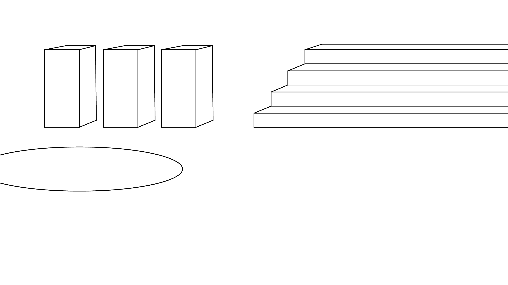
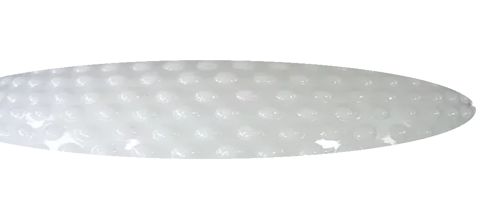

Pantone Colors of the Year 2000-2021
Since 2000, the Pantone Color Institute has declared a particular color "Color of the Year". Twice a year the company hosts, in a European capital, a secret meeting of representatives from various nations' color standards groups. After two days of presentations and debate, they choose a color for the following year; for example, the color for summer 2013 was chosen in London in the spring of 2012. The color purportedly connects with the zeitgeist; for example, the press release declaring Honeysuckle the color of 2011 said "In times of stress, we need something to lift our spirits. Honeysuckle is a captivating, stimulating color that gets the adrenaline going – perfect to ward off the blues." The results of the meeting are published in Pantone View, which fashion designers, florists, and many other consumer-oriented companies purchase to help guide their designs and planning for future products. Pantone added two colors for 2021.In 2012, the color of the year, Tangerine Tango, was used to create a makeup line, in partnership with Sephora. The product line, named Sephora + Pantone Universe collection, features Tangerine Tango–embellished false lashes, nail lacquers, cream, glitters, and high-pigment lip glosses.Pantone has said that color "has always been an integral part of how a culture expresses the attitudes and emotions of the times.
Pantone began in New Jersey in the 1950s as the commercial printing company of brothers Mervin and Jesse Levine, M & J Levine Advertising. In 1956, its founders, both advertising executives, hired recent Hofstra University graduate Lawrence Herbert as a part-time employee. Herbert used his chemistry knowledge to systematize and simplify the company's stock of pigments and production of colored inks; by 1962, Herbert was running the ink and printing division at a profit, while the commercial-display division was US$50,000 in debt; he subsequently purchased the company's technological assets from the Levine Brothers for US$50,000 (equivalent to $420,000 in 2019) and renamed them "Pantone". The company's primary products include the Pantone Guides, which consist of a large number of small (approximately 6×2 inches or 15×5 cm) thin cardboard sheets, printed on one side with a series of related color swatches and then bound into a small "fan deck". For instance, a particular "page" might contain a number of yellows of varying tints. The idea behind the PMS is to allow designers to "color match" specific colors when a design enters production stage, regardless of the equipment used to produce the color. This system has been widely adopted by graphic designers and reproduction and printing houses. Pantone recommends that PMS Color Guides be purchased annually, as their inks become yellowish over time. Color variance also occurs within editions based on the paper stock used (coated, matte or uncoated), while interedition color variance occurs when there are changes to the specific paper stock used.

